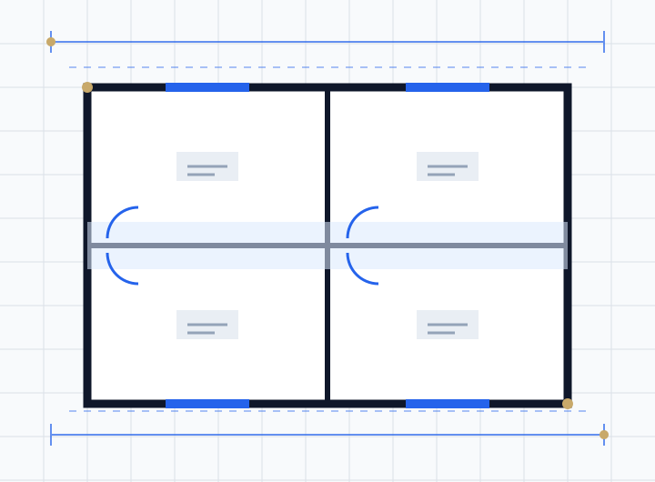

Change of use planning permission is needed when you change how a building or land is used from one use class to another in a way that counts as a "material change of use". Moving between uses in the same use class does not need permission. Some changes between classes are permitted development, such as a house (C3) to a small HMO (C4), or some commercial (Class E) buildings to homes through prior approval. Converting a house into flats, creating a large HMO for 7 or more people, or opening a takeaway always needs a full planning application.
Most planning questions are about building something. Change of use is about using something differently: a shop becoming a flat, a house becoming an HMO, an office becoming homes, or one house becoming two. No building work may be needed at all, but the planning system still treats it as development, and getting it wrong can lead to enforcement.
This guide explains the use classes, which changes are permitted, how to apply for change of use, and the common residential conversions landlords and developers ask about. It covers England.
Key takeaways
- Uses are grouped into classes by the Use Classes Order 1987, last restructured in September 2020.
- A change within the same use class is not development and needs no permission.
- Some changes between classes are permitted development, sometimes subject to prior approval.
- Splitting a house into flats is always a material change of use and needs planning permission.
- Article 4 directions often remove permitted changes, especially house to HMO.
- Building regulations and HMO licensing are separate approvals from planning.
The use classes explained
The Town and Country Planning (Use Classes) Order 1987 puts common uses into classes. Since 1 September 2020 the main classes are:
| Class | Covers |
|---|---|
| B2 | General industrial |
| B8 | Storage and distribution |
| C1 | Hotels, boarding and guest houses |
| C2 and C2A | Residential institutions such as care homes; secure residential institutions |
| C3 | Dwellinghouses, used by a single household or up to six people living together as a household |
| C4 | Small HMOs, shared by 3 to 6 unrelated people |
| E | Commercial, business and service: shops, cafes and restaurants, offices, gyms, nurseries, clinics, light industry |
| F1 and F2 | Learning and non-residential institutions; local community uses |
| Sui generis | Uses in no class, including large HMOs (7 or more), pubs, hot food takeaways, cinemas and betting shops |
Because Class E is so broad, a shop can become a cafe, office or gym without planning permission, as long as no conditions restrict it and no building work needs permission.
When do you need change of use planning permission?
You need planning permission when the change is a material change of use that is not permitted development. In practice that includes:
- Changing between use classes where no permitted development right applies, for example Class E to a hot food takeaway.
- Subdividing a house into two or more flats or houses, which the Town and Country Planning Act 1990 treats as a material change of use.
- Creating a large HMO for 7 or more people, which is sui generis.
- Changing a house to a small HMO where an Article 4 direction removes the permitted right.
- Running a business from home that changes the character of the property, for example frequent customers or staff.
- Using agricultural land or buildings for something else, unless a prior approval route applies.
Changes of use that are permitted development
Part 3 of the General Permitted Development Order 2015 allows certain changes without a full application. Some need prior approval, a lighter process where the council checks specific matters only.
| Change | Route | Key points |
|---|---|---|
| House (C3) to small HMO (C4), and back | Permitted development | Removed in many university cities by Article 4 directions |
| Commercial (Class E) to homes (C3) | Prior approval (Class MA) | Council checks matters such as transport, flooding, noise, contamination and natural light; homes must meet national space standards |
| Shop or similar with up to two flats above | Permitted development (Class G) | Mixed use of ground floor commercial and flats above |
| Agricultural buildings to homes | Prior approval (Class Q) | Strict limits on size, number and building suitability |
Permitted changes do not apply to listed buildings in some cases, can be restricted in conservation areas, and can be removed by planning conditions or Article 4 directions. Always check the property's planning history first.
Common residential change of use projects
House into flats
Converting a house into self-contained flats always needs planning permission. Councils assess the size of each flat against space standards, the mix of unit sizes, amenity space, bin and cycle storage, parking, and the impact on neighbours. Many councils resist losing family houses, particularly smaller ones. Our flat conversion drawings service covers these applications, and each new flat will later need a Land Registry compliant lease plan when it is sold.
House into an HMO
A small HMO for 3 to 6 people is permitted development unless an Article 4 direction applies. An HMO for 7 or more people always needs planning permission. HMO licensing is a separate regime. See our guides to HMO planning permission and HMO floor plans and layout, and our HMO conversion drawings service.
Office or shop into homes
Class E buildings can often become homes through Class MA prior approval. The council cannot refuse on general planning merit, only on the matters set out in the order, but it will check natural light, noise and space standards closely. Where prior approval does not apply, a full application is needed.
Garage or outbuilding into living space
Using an integral garage as a room is usually not a change of use. Turning a detached outbuilding into a separate dwelling is. See garage conversion planning permission and garden room planning permission.
How to apply for change of use
- Confirm the lawful current use. Check the planning history and any conditions. If the existing use has been in place for many years, a lawful development certificate may confirm it.
- Identify the route: no permission, permitted development, prior approval or full planning application.
- Consider pre-application advice for anything contentious, such as flats or large HMOs.
- Prepare drawings and documents: location and block plans, existing and proposed floor plans, elevations if anything external changes, and a planning statement. Some councils ask for marketing evidence when a commercial use is lost.
- Submit through the Planning Portal with the correct fee. Change of use fees are set nationally.
- Wait for a decision, usually within 8 weeks for minor applications. Prior approval applications have their own time limits.
For the drawing standards, see drawings needed for planning permission. Accurate existing plans usually start with a measured building survey.
Building regulations and other approvals
Building regulations treat creating flats, a new dwelling or certain residential uses from another use as a material change of use, so the building must be brought up to relevant standards for fire safety, sound insulation, ventilation, energy and drainage. See building regulations drawings explained. Depending on the project you may also need an HMO licence, fire risk assessment, landlord consent or freeholder consent.
What if the use changed without permission?
The council can take enforcement action against an unauthorised change of use. For changes made on or after 25 April 2024, the enforcement time limit in England is generally 10 years. The usual fix is a retrospective planning application, or a lawful development certificate if the use has become immune from enforcement.
How we help
We check the lawful use and the right planning route, then prepare the existing and proposed drawings for change of use applications, prior approvals and lawful development certificates, including flat and HMO conversions. We work remotely across England, including London, Manchester, Leeds, Nottingham and Newcastle upon Tyne. Send us the address and what you want to change for an initial view.
Frequently asked questions
When do you need change of use planning permission?
When you make a material change of use between use classes that is not covered by permitted development, such as splitting a house into flats, creating a large HMO, or turning a shop into a hot food takeaway.
Do I need planning permission to change use within the same class?
No. Changes within the same use class are not development, for example a shop becoming an office within Class E, unless a planning condition restricts the use.
Do I need planning permission to convert a house into flats?
Yes. Subdividing a house into two or more self-contained dwellings is a material change of use and always needs planning permission, as well as building regulations approval.
Is a house to HMO conversion permitted development?
A change from a house (C3) to a small HMO for 3 to 6 people (C4) is permitted development unless an Article 4 direction removes it. HMOs for 7 or more people always need planning permission.
What is prior approval for change of use?
It is a lighter process for certain permitted changes, such as Class E commercial buildings to homes, where the council only checks specific matters like transport, flooding, noise, contamination and natural light rather than general planning merit.
How long does a change of use application take?
Most minor change of use applications are decided within 8 weeks of validation. Prior approval applications have their own set time limits.
Can I run a business from home without change of use permission?
Usually yes, if the business is ancillary to living there. Permission may be needed if it brings regular customers, staff who do not live there, or noise and deliveries that change the character of the home.